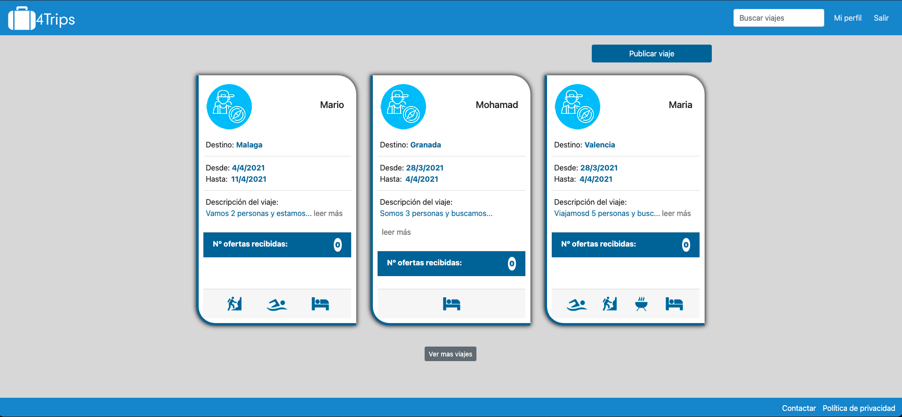

4Trips is an application that is the other way around of Booking and too many other websites, what does that means?! It is a good question.
With 4Trips there are two types of accounts: Traveler and professional.
As a traveler you can publish a trip, edit your trip, give a rate to professionals. And for sure you have your own profile where you can see all your trips that you have published.
As a professional this makes your life easier, because you do not have to wait until they contract you! With this app you go for them and look for your client, and for sure we did not forget you! You have your profile and there you can see the rate you have and edit your information.
We are still working on 4Trips to make it easier, nicer and with more functionalities.
The technology that we used in this app: React js, Bootstrab, Python, Flask, SQLalchemy, Heroku, Vercel and SendGrid to send Emails.
Back-end code github.
Front-end code github